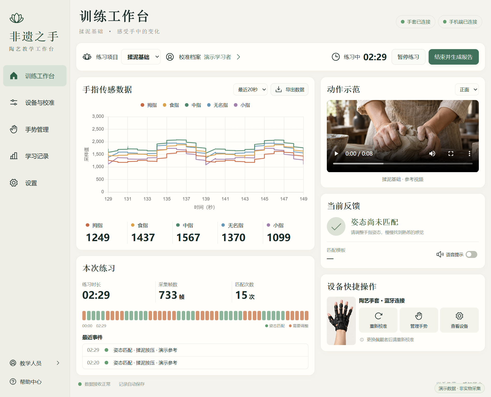
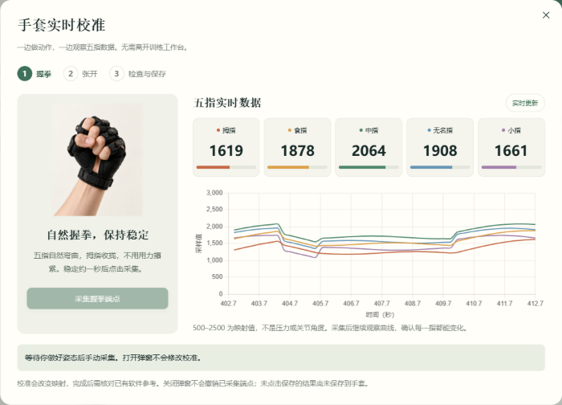
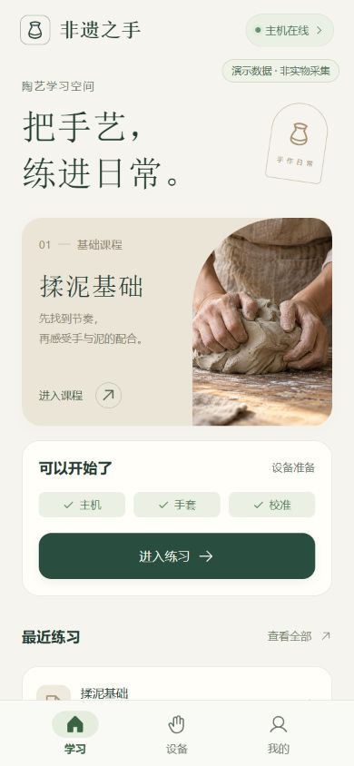
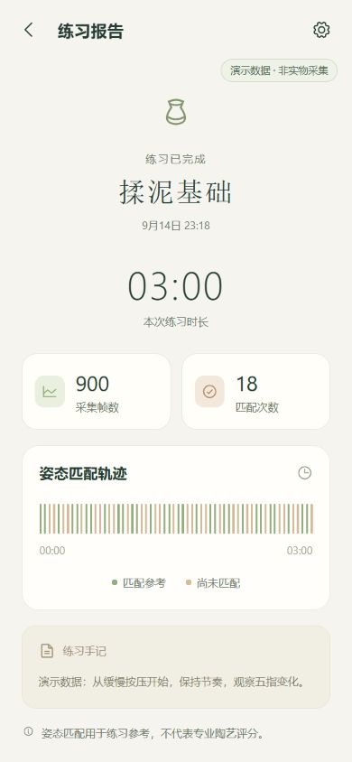

一套以电脑主机为中心的软硬件协同系统：手套负责采集，主机负责比对与留档，手机端负责随身查看与协同。
五路柔性弯曲传感器，映射为 500–2500 的五指采样值，经 BLE 蓝牙实时上报。
校准、参考录入、姿态比对、实时曲线、练习报告与数据导出。
查看主机状态、控制练习、同步报告；小程序可独立使用本机存储。
独立安装包，连接同一台电脑主机，离线可查看最近同步的报告。
以下为软件实际运行截图。手套数值与报告为演示数据，界面为真实渲染结果。




放在 GitHub Release 上，链接长期有效，不会像聊天软件里的文件那样过期。附带 SHA-256 校验值。
http://localhost:4180| 环节 | 当前状态 |
|---|---|
| 电脑工作台 | 校准、参考录入、容差比对、持续匹配计数、报告与 JSON/CSV 导出，已完整可用 |
| 手套接入 | 蓝牙连接真实手套，五路数据、模式查询与往返切换、断开重连、校准与保存均有实物验证 |
| 手机端 / 小程序 | 手机网页端已可用；微信原生工程已就绪，尚未用正式 AppID 在真机编译验证 |
| 安卓助手 | 0.2.0 安装包可安装使用（内部 debug 签名，未上架） |
| 自动化测试 | 电脑端 26 项、App 端 8 项，共 34 项离线测试通过 |
| 时序动作识别 | 当前为五路静态姿态比对，完整揉泥动作的时序识别在研发中 |
| 视觉链路 | 摄像头识别程序已归档，尚未接入工作台；视频区域播放教学参考视频 |